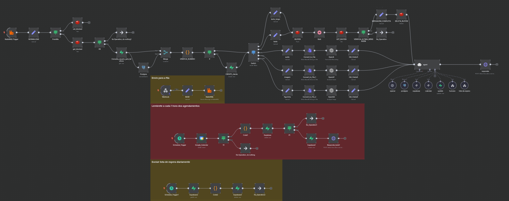
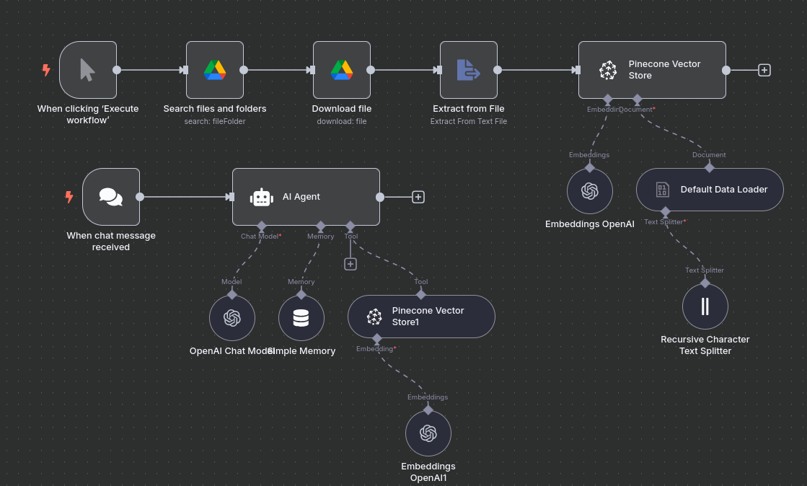
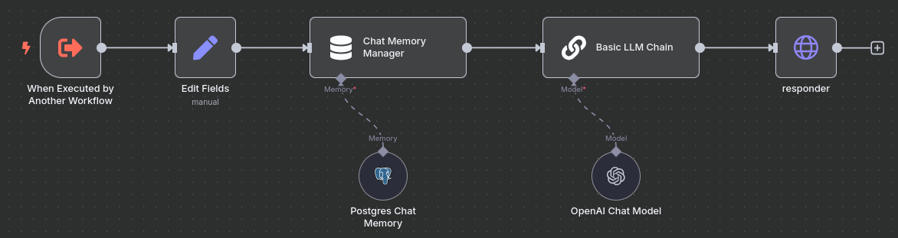

IA Conversacional

Assistente virtual no Whatsapp para agendamento/cancelamento/reagendamento de horário de forma autônoma.
N8N
RabbitMQ
Redis
Postgres
Javascript
Evolution API
OpenAI API
IA Conversacional

Usando python com a biblioteca Docling, PDF com conteúdos internos são transformando em Markdown, e de documentos "mortos" se transformam em conhecimento vivo para a IA.
N8N
OpenAI API
Python com Docling
Google Drive
Pinecone
Rotina em python
Usando o endpoint "/instance/connectionState/[nome_da_instancia]", é feito um GET para monitorar o estado atual da instancia. Integrado com o Telegram para caso a instancia esteja como "close", é enviado uma notificação.
Python
Telegram
Call Human

Tool criada para quando o cliente quer saber de uma informação na qual a IA não tem acesso, as vezes por regra de negócio ou até pela complexidade.
- Recupera o histórico da conversa;
- Usa um modelo da OpenAI para gerar um resumo em bullet points dos últimos pontos relevantes;
- Envia esse resumo para o atendente com o número de contato, agilizando o atendimento e evitando que o humano “comece
do zero”.
N8N
WooCommerce
ERP Integration
Email Marketing
WhatsApp API